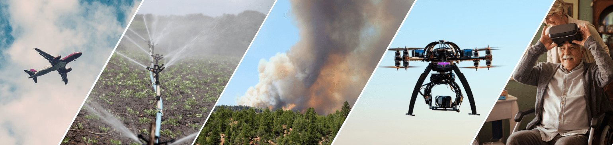

13 cross-campus projects selected for 2021 Seed Awards
December 10, 2021
By Megha Krishnan
The Center for Information Technology Research in the Interest of Society and the Banatao Institute (CITRIS) announce the recipients of the 2021 CITRIS Seed Awards. Competitive teams from the University of California campuses at Berkeley, Davis, Davis Health, Merced and Santa Cruz submitted 47 proposals for innovative, early-stage projects that emphasize collaboration across two or more institutions. This year, thanks in part to external philanthropic support, 13 teams were selected to each receive a one-time award of up to $60,000 for interdisciplinary work. These projects are designed to show results within a year, but many promise far-reaching influence on the future of their fields.
“We are proud to support these innovative multidisciplinary proposals that demonstrate not only the bold ideas of UC faculty members but the power of forging partnerships across campuses to advance technology solutions for some of the most pressing issues of our day,” said CITRIS Director Costas Spanos.
The selected proposals address grand challenges, including climate resilience, digital health innovation, next-generation technology policy, and automation and the workforce. Wildfire mitigation and decision support was a common theme: One project proposes using a swarm of uncrewed aerial vehicles to detect wildfires earlier, while others aim to protect civilians with air quality monitoring, robust building materials and safety training. Other projects will leverage machine learning and the Internet of Things (IoT) to offer human-centered solutions to clean energy, water management and advanced health care issues.
Just as their proposals tackle critical problems in innovative ways, the teams feature faculty members from diverse fields. The investigators’ backgrounds range from mechanical and aerospace engineering to architecture, ophthalmology and management of complex systems. More than half the projects include pre-tenure faculty, and 85 percent of this year’s lead investigators are new CITRIS Seed Award recipients.
Since 2008, the CITRIS Seed Funding program has supported more than 235 projects and over 425 researchers, resulting in extramural funding up to four times the initial investment within three years of completion. CITRIS Seed Awards facilitate the scientific groundwork, data collection and prototyping necessary to pursue larger research or commercialization awards that address major unsolved challenges.
The following proposals received 2021 awards:
Air-drag-reducing microstructured surfaces (ARMS) for improved fuel
efficiency
Principal Investigators: Grace Gu (Lead PI, UC
Berkeley), Stephen Robinson (UC Davis)
Skin friction drag, i.e., air drag due to friction against surfaces, reduces the energy efficiency of various technologies, including aircraft, wind turbines and gas pipelines. These applications contribute up to 3.5 percent of total global carbon dioxide emissions, and increasing their fuel efficiency by even 1 percent could save over 180 million gallons of fossil fuel per year. This project intends to create a synthetic surface inspired by shark skin, a material that has been proven to reduce friction drag when compared to a smooth surface. Covering airplane panels, wind turbine blades and gas pipelines with this novel material could significantly decrease the amount of energy needed to power their use and have a positive impact on emissions.
Auditing the compliance of California consumer privacy regulations at
scale
Principal Investigators: Serge Egelman (Lead PI, UC
Berkeley), Zubair Shafiq (UC Davis)
The California Consumer Privacy Act (CCPA) provides enhanced privacy protections and rights for California residents. Enacted in 2018, the CCPA allows consumers to request information about how a business collects, uses and discloses their personal information, and to withdraw their consent from the sale of personal data. This project will examine the implementation of these new regulations to learn how well application developers understand their obligations and create processes for consumers to exercise their rights. The study will also investigate the accuracy of companies’ responses to these requests and the effectiveness of consent mechanisms. The findings of this research can help legal entities strengthen consumer rights and could generate tools for developers to ensure their apps meet CCPA standards.
Automated wearable ophthalmic imaging device
Principal
Investigators: Parisa Emami Naeini (Lead PI, UC Davis Health), Iman Soltani (UC
Davis)
Vision impairment is one of the most common disabilities worldwide, yet most cases can be prevented through regular eye exams and advanced ocular imaging. However, current imaging technologies are expensive and bulky, require skilled technicians to operate, and cannot accommodate a diverse range of patient needs and abilities. As a result, many people — such as children and the elderly, those in remote regions and those from lower socioeconomic backgrounds — don’t have access to vision-saving technology. This project will develop an automated wearable ophthalmic imaging device, consisting of a virtual reality headset with fundus imaging and optical coherence tomography systems. Patients will see entertaining visual stimuli while receiving vital diagnostic care. The instrument is intended to be operable in any setting, and will increase equitable access to medical technologies across socioeconomic statuses and geographic areas.
Clearing the air: Using smart thermostats to improve wildfire resiliency
in Californian homes
Principal Investigators: Stefano Schiavon
(Lead PI, UC Berkeley), Mark Modera (UC Davis)
Fine particulate matter is the largest environmental risk factor for human health and death in California, and wildfires in the western United States are a major source. Exposure studies have largely focused on outdoor particulate concentrations, but people tend to shelter indoors during fire events. This project will develop software that programs smart thermostats to adjust ventilation system operation based on outdoor particulate concentrations, in order to ensure indoor air quality. Using this technology, smart thermostats can reduce air intake in occupied buildings when outdoor air quality is poor and use air quality forecasts to precondition homes to reduce peak cooling loads. This project not only decreases the health risks associated with wildfires, but also sets the groundwork for future efforts to use big data to improve public health and climate resilience.
Developing resilient materials and sensors for improved building
performance
Principal Investigators: Lilian Davila (Lead PI, UC
Merced), Jeanette Cobian-Iñiguez (UC Merced), Scott Moura (UC Berkeley)
Climate change is increasingly affecting communities around the world through more intense and frequent wildfires, extensive flooding, and other natural disasters. This project will design, fabricate and test new eco-friendly, fire-resistant construction materials, as well as low-cost, integrated environmental sensors to measure their performance. The design process will inform the future development, testing and implementation of similar building materials and monitoring devices while also promoting sustainable materials and reuse of industry waste. If the materials generated by this project prove to be fire-resistant, thermally insulating and structurally robust, they could establish a path away from steel, a key construction component that greatly contributes to carbon dioxide emissions.
Electric tractors: Identifying paths to clean energy in farming
operations
Principal Investigators: Ricardo Pinto de Castro
(Lead PI, UC Merced), Reza Ehsani (UC Merced), Stavros Vougioukas (UC Davis)
Almost all agricultural vehicles in current use rely on fossil fuels, one of the main sources of air pollutants. Electrification is a long-term solution to this problem, but to date, electric tractors have cost more, required more infrastructure and worked fewer hours per charge than their diesel counterparts. This project will develop a tool to help farm managers determine when to deploy the electric and diesel tractors in their fleets. This decision tool relies on data collected from the farm, such as acreage, crop types, soil and weather patterns, to compute overall power requirements for the fleet. Optimization techniques will help characterize an ideal balance between technical performance, economic costs and air pollution. The resulting information can help stakeholders in agriculture develop electrification strategies and ultimately create more sustainable systems.
Haptic smart phone-cover: A real-time navigation system for individuals
with visual impairment
Principal Investigators: Iman
Soltani (Lead PI, UC Davis), Parisa Emami Naeini (UC Davis Health), Jonathon
Schofield (UC Davis)
While many researchers have thoroughly investigated assistive technologies to help people with visual impairments navigate and experience their environments in rich detail, few devices have been adapted beyond research spaces. This project aims to take assistive aids out of the laboratory and into the world by creating a tactile phone cover to provide the user with a haptic map of surrounding obstacles using controllable surface topography. By relying on touch, rather than sound, this technology allows for people with visual impairments to be aware of their surroundings while also being able to sense their environment in richer detail. This technology can help individuals with visual impairments to move around their surroundings more independently and also inform further development of haptic assistive devices.
Mapping the global use of water resources in
agriculture
Principal Investigators: Paolo D’Odorico (Lead
PI, UC Berkeley), Andre Daccache (UC Davis)
Agriculture is responsible for roughly 70 percent of human water consumption, and growing populations require the production of more food — and thus the use of more water. However, due to climatic extremes and unpredictable water supplies, some regions must enhance crop yields with a more strategic, data-informed approach to water usage. This project will develop high-resolution spatial and temporal irrigation models for a global-scale water information system to replace commonly used but outdated global irrigation maps. This new system relies on satellite remote sensing and artificial intelligence, as well as global models of irrigation water needs, water availability and actual irrigation schemes. Powered by deep learning algorithms, the resulting models can inform policymakers, academic researchers and nongovernmental organizations to guide decisions on water management, investment and policy.
Persistent, autonomous, patient-centered monitoring and its application
to pressure injury prevention
Principal Investigators: Katia
Obraczka (Lead PI, UC Santa Cruz), Sarina Fazio (UC Davis Health), Holly
Kirkland-Kyhn (UC Davis Health)
Low-mobility individuals are disproportionately affected by pressure ulcers and injuries, wounds that develop in localized areas of tissue and can take years to heal. This open-source project based on the Internet of Things (IoT) will integrate vital sign sensors and surfaces such as mattresses or wheelchairs into a patient monitoring framework. The resulting system is designed to operate autonomously and continuously, with real-time data collection, storage and analysis. Given the system’s ability to detect conditions early, its immediate visual feedback and its integration of different sensors based on a patient’s individual health conditions, this project has the potential to significantly improve telehealth treatment, patient well-being and health care costs.
The power of health in Africa: A novel data collection approach for
analyzing how distributed energy systems support vaccine cold chain
resilience
Principal Investigators: Daniel Kammen (Lead
PI, UC Berkeley), Rebecca Hernandez (UC Davis)
Health care provisioning and basic services in the Global South rely heavily on affordable and reliable electricity, and a lack of data on power quality and reliability hinders efforts to address the temperature-dependent supply chain, or cold chain, of COVID-19 vaccines in Africa. By using outlet-level power sensors and a robust collection methodology, this project will systematically gather high-quality information on health centers’ uptime. Efforts will focus on locations in Rwanda and the Democratic Republic of the Congo and will characterize the energy needs at various scales of health services. By collecting and monitoring spatiotemporal data continuously, this project can help electrification planners better rationalize infrastructure deployments and assist health sector professionals in identifying cold chain vulnerabilities.
Uncrewed aerial vehicle swarms for large-scale and real-time air toxin
measurement near wildland-urban-interface fires
Principal
Investigators: Zhaodan Kong (Lead PI, UC Davis), Deborah Bennett (UC Davis
Health), Anthony Wexler (UC Davis), Thomas Young (UC Davis)
While California has faced numerous hazardous wildfires in recent years, fires at the wildland-urban interface (WUI) are particularly dangerous, as they burn synthetic compounds that can make their smoke more toxic than wildland blazes. Currently, WUI fires can be only partially mitigated by human responders and the resulting smoke plumes are poorly understood while they travel across long distances. To provide support in the short term, this project will build and deploy a swarm of uncrewed aerial vehicles (UAVs) and use them to measure a range of toxic gases and aerosols in WUI plumes during active fire events. In the long-term, this research aims to develop UAV swarms that can autonomously assess fire risks, predict the transfer of outdoor pollutants into indoor environments, and better characterize the health effects of toxic wildfire plumes.
Virtual evacuation decision-making under fire threat for personal
property and transportation decisions
Principal Investigators:
Spencer Castro (Lead PI, UC Merced), Sri Kurniawan (UC Santa Cruz)
Given the devastating breadth of wildfires across 12 states in 2020, and the increasing prevalence of fires in locations with historically lower danger, more people are being exposed to fires at the wildland-urban interface (WUI). Many people in these locations are unaware of the dangers of wildfires and unprepared to evacuate their homes. This project plans to develop a platform for public fire training through immersive virtual environments for greater accessibility and evacuation decision-making under time pressure. The platform will help determine which sensory metrics best predict performance for these types of decisions and accurately represent real-time cognition. This technology will help civilians evacuate their homes more efficiently and, ultimately, help save lives.
Wearable sensor technologies for continuous monitoring of function and
capacity in older adults
Principal Investigators: Carolynn
Patten (Lead PI, UC Davis Health), Xin Liu (UC Davis)
While continuous monitoring technology that can help older adults identify changes in their functional ability and physiological capacity has become more common in recent years, no wearable devices are yet commercially available to measure step symmetry. Step symmetry is an important early indicator of health conditions that may leave older adults unable to live independently. To encourage proactive care for these problems, this project will combine a wearable sensor with an algorithm for heart rate, acceleration and gyroscope signals to determine critical changes in a patient’s gait. Observing these changes early can improve life planning for older people and can offer hope for remediation with timely, targeted intervention programs to maintain physical, cognitive and emotional health.